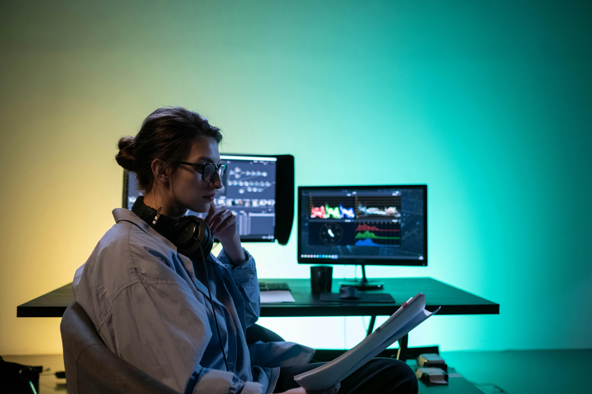

Creative Director
Compelling Visual Stories
Using professional editing and motion design techniques, I shape footage into cinematic videos, short-form content, ads, and brand visuals that hold attention.
Every project represents a deliberate fusion of pacing, sound architecture, and motion kinetics. By establishing a collaborative production workflow, we eliminate friction and ensure your story translates powerfully on YouTube, corporate boards, or high-speed social feeds.

Career journey
From timeline cuts to full visual systems.
My work combines story structure, visual rhythm, audio polish, motion graphics, and platform-specific delivery. I have worked across creator content, corporate videos, weddings, education, podcasts, ads, and social campaigns.
Editing Style
Cinematic pacing, clean transitions, sharp hooks, emotional beats, and brand-safe polish engineered to convert views.
Creative Approach
Start with the viewer goal, then build structure, sound, motion, color, and export formats optimized for direct delivery.
Production Hub
Production Quality Summary
Explore our optimized post-production framework designed to maximize watch time, visual depth, and auditory clarity. Click each capability to view performance metrics.
Maximized Viewer Engagement
Every timeline edit is tailored to capture and sustain audience interest. We analyze pacing curves, implement strategically timed cuts, and construct persuasive hooks to minimize viewer drop-off within the first crucial seconds.
Cinematic Graphic Polish
Integrating fluid camera transitions, layered color grading matrices, and modern kinetic captions to build an immersive visual brand identity across reels, commercials, and YouTube chapters.
Immersive Audio Systems
Delivering crisp vocal clarity, ambient environmental padding, cinematic whoosh-transitions, and targeted voiceover volume leveling to make your story sound clean on mobile speakers and premium theater systems alike.
Industries
Industries worked with.
Delivering specialized visual storytelling frameworks designed for specific audiences and business sectors.
Creators
High-speed, retention-focused editing for YouTube, vertical reels, podcasts, shorts, and personal brand growth campaigns.
Brands
Polished founders' stories, high-converting social ads, product launch videos, explainers, and internal corporate films.
Events
Cinematic wedding highlights, emotional event recaps, visual speeches, and memorable corporate highlight montages.
Creative Identity
Editing style built around emotion and clarity.
My approach blends cinematic rhythm with practical digital performance. A video should look good, but it also needs to be understandable, memorable, and formatted for the place where people will watch it.
Rhythm
Music-driven, retention-focused pacing that keeps viewers completely locked into the story timeline.
Clarity
Sleek captions, motion title cards, and callouts that make complex messages effortless to follow.
Experience Map
What shapes the work.
A broad portfolio of practical editing experience across diverse post-production verticals.
Brand Content
Commercial product launches, polished explainers, founder profiles, and high-conversion social campaigns that align with your corporate style guidelines.
Creator Content
Retention-focused YouTube episodes, podcasts, animated reels/shorts, and automated digital asset packages designed to build strong digital followings.
Event Stories
Atmospheric wedding highlights, event recaps, speech compilations, and emotionally resonant memorial reels paced beautifully to cinematic soundtracks.